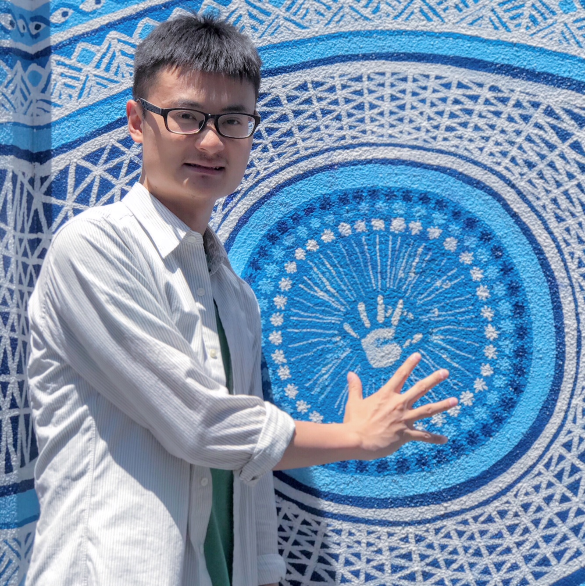

Hello, I am Fujie Rao, a Lecturer in Urban and Regional Planning at Adelaide University (Level B; continuing position). I previously served as a tenure-track Assistant/Associate Professor of Urban Design and Planning at Shanghai Jiao Tong University from November 2020 to December 2025. My research focuses on resilient and sustainable urban transitions amid rapid digitalisation and the climate crisis, with particular interests in city centres, main streets, digital-material shopping spaces, 15/X-minute cities, and climate-resilient, healthy, and just human habitats.
On this website, you can explore my career – including academic and professional experiences and awards – and my contributions to research, teaching, and services. Feel free to get in touch regarding research or teaching collaborations, RA/postgraduate opportunities, urban planning/design practice and consultancy, interview requests, career development, and other enquiries.
Google Scholar LinkedIn ResearchGate
Email: raofujie@gmail.com or fujie.rao@adelaide.edu.au
4F, Kaurna Building
School of Architecture and Built Environment
College of Creative Arts, Design and Humanities
Adelaide University, Adelaide SA 5000, Australia
Updated: